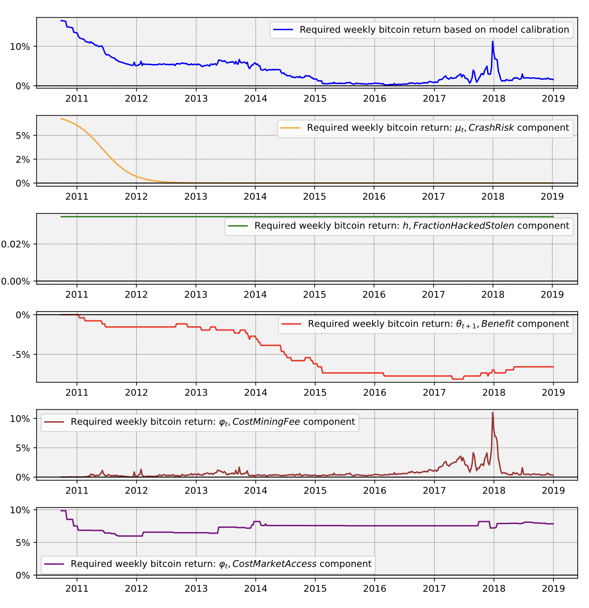
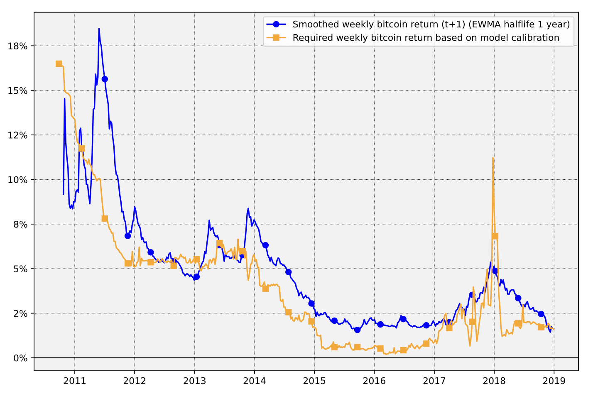
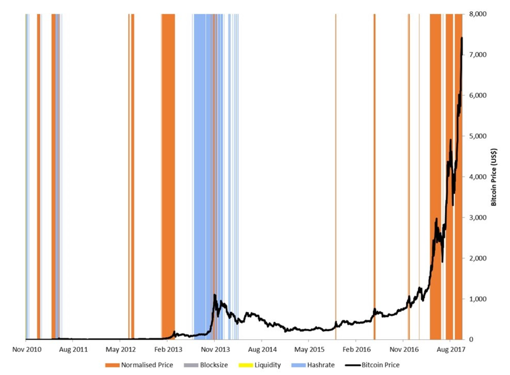

比特币没有基本面吗
最近写了一篇关于比特币定价的论文(Ren, 2025b)（论文相关数据参见(Ren, 2025a)），为了方便阅读和传播，将其分拆为数个专题小文章，以分别讨论其核心内容。
该论文的引言部分介绍和讨论了关于比特币定价的相关文献，对关于比特币是否有基本面价值的争论进行了深入的讨论。本文即着重讨论这一问题，并对利用基本面对BTC定价的一些重要理论进行了介绍和讨论。
概述
关于比特币价格形成及其特征的相关论文，可以参见论文(Ren, 2025b)的引言部分。限于篇幅，本文仅讨论几篇重要的文献。
- 认为比特币没有基本面价值的代表：Cheah & Fry (2015); Taleb (2021a); Taleb (2021b)。
- 作为本文重要理论及实证参考的代表：Athey et al. (2016); Corbet et al. (2018); Cong et al. (2021); Biais et al. (2023)。
比特币只是一个泡沫？
本节先介绍《比特币市场的投机泡沫》(Cheah & Fry, 2015)一文的核心观点，再对其进行评价。
比特币基本面价值为0！
Cheah & Fry (2015) 在论文中发展了一套检验比特币基本面和泡沫的方法。利用他们的方法，最终得出比特币没有基本面价值的结论。
他们得到有投机泡沫的价格遵循如下规则：
\[\begin{equation} \label{eq01} P_B(t)=P(0)e^{\tilde{\mu}t+(\nu - \frac{\nu^2}{2})H(t)} \end{equation}\]
上式包含\(\nu\)的部分、为作者们定义的价格泡沫部分，其中\(H(t)\)函数是一个非线性函数，代表有投机泡沫阶段的价格会出现非线性上涨，计算如下：
\[\begin{equation} \label{eq02} H(t)=\int_0^t h(u)du \end{equation}\]
作者们借用了论文(Fry, 2014)中的风险函数（hazard function），即上式中的\(h(u)\)：
\[\begin{equation} \label{eq03} h(t)=\frac{\beta t^{\beta -1}}{\alpha^{\beta}+t^{\beta}} \end{equation}\]
计算可得：
\[\begin{equation} \label{eq04} H(t)=\log(1+(\frac{t}{\alpha})^{\beta}) \end{equation}\]
结合\(\eqref{eq01}\)可得：
\[\begin{equation} \label{eq05} \begin{aligned} \log(P_B(t))=&\log(P(0))+\tilde{\mu} t+ \\ & (\nu-\frac{\nu^2}{2})\cdot\log(1+\frac{t}{\alpha})^{\beta} \end{aligned} \end{equation}\]
为了保持符号的一致性，上述\(\log(\cdot)\)代表自然对数，即等价于通常的\(\ln(\cdot)\)，下文如有特别说明、否则均同此例。
作者们认为，对应\(\eqref{eq01}\)的基本面价格应该遵循如下规律：
\[\begin{equation} \label{eq06} P_F(t)=P(0)e^{\tilde{\mu}t} \end{equation}\]
即，对数基本面价格的期望值与时间成线性关系：
\[\begin{equation} \label{eq07} \log(P_F(t))=\log(P(0)) + \tilde{\mu}\cdot t \end{equation}\]
进一步，作者们定义了泡沫部分比例（Bubble Componet，本文用\(r_B\)表示之），用以衡量在一段时间内泡沫价值所占的比例。
\[\begin{equation} \label{eq08} r_B=1-\frac{1}{T}\int_0^T\frac{P_F(t)}{P_B(t)} \end{equation}\]
根据上面的价格模型，作者们指出，如果\(\tilde{\mu}<0\)，则比特币的长期价值为0：
\[\begin{equation} \label{eq09} \lim_{t \to \infty}P_F(t)=0, \quad \text{if } \tilde{\mu}<0 \end{equation}\]
作者们挑选了2013/01/01到2013/11/30的比特币价格数据，来拟合参数\(\nu\)和\(\tilde{\mu}\)。最终，他们得出\(\nu\)显著非0，\(\tilde{\mu}\)不显著异于0，在该时间段内，由\(\eqref{eq08}\)计算所得的泡沫部分比例达到\(48.7\%\)。
据此，他们宣称得出结论：比特币基本面价值为0、价格只由泡沫性投机驱动。
他们这篇论文曾经产生过重大的影响，是比特币没有基本面价值观点的一个代表。
且慢，论述有漏洞
聪明的读者想必早就看出来，他们的论证和结论存在一些致命的漏洞，限于个人能力，我只能列举一些：
- 他们的基本面价值模型\(\eqref{eq07}\)假定了\(\log(P_F)\)为时间的线性函数，这不是必然成立的。对非线性价值有深入讨论的论文，可以参见(Cong et al., 2021; Corbet et al., 2018)，我将会在后文中对这两篇论文进行介绍。如果比特币的基本面价值中存在非时间线性的成分，按照 Cheah & Fry (2015) 的建模\(\eqref{eq05}\)，将会被视为泡沫部分。除开刚刚提到的两篇论文外，我提出的EPM模型也揭示出，比特币存在非时间线性成分的基本面价值，参见@Ren-bitcoin-epm-2025 一文的section 2或者我之前的博文（参见此处）；
- 作者们检测出了\(\nu >0\)很显著，也可能反映的是、比特币对数基本面价格包含非线性部分；
- 风险函数\(\eqref{eq03}\)是一个人工函数，并不是真实市场的准确反映。这可以从这些原因看出：在参数确定时，该函数以及\(\eqref{eq04}\)、\(\eqref{eq05}\)只能描述价格趋势要么持续上涨、要么持续下跌的过程，不能描述包含了多个上涨下跌周期的过程。鉴于比特币价格存在明显的周期性，该模型也就自然无法准确描述比特币的基本面价格变化。这也就是为什么作者们只选用了2013/01/01到2013/11/30时间段的数据来拟合参数的原因，因为他们的模型只能描述肉眼可见的泡沫过程。从而，即便确定出\(\tilde{\mu}\)不显著异于0，也不能说明比特币的长期基本面价值为0；
- 即便在2013/01/01到2013/11/30时间段这样一小段时间内，检测出比特币价格的泡沫成分占主导，也不能说明比特币在全时间段上泡沫占主导、没有基本面价值。在价格爆炸性上涨阶段，线性部分\(\tilde{\mu}\)的影响很可能被吸收进了非线性部分中；
- 纵然模型设定无误，作者们要得到比特币长期价值为0的结论，需要\(\tilde{\mu}<0\)显著成立，但是他们从泡沫阶段得出的\(\tilde{\mu}=0.00166\)，并不显著为负。
因而，利用该论文中的模型及实证，并不能得出作者们宣称的结论。从事实的角度看，在作者们得出比特币基本面价值为0（2015年）之后，其价格持续上涨，直到今天（2025年）仍未见颓势，也反证出他们的逻辑存在巨大的漏洞。
比特币与脆弱性
Taleb (2021a) 在arXiv上发布了一篇批判比特币的论文，利用量化金融的方法及经济学论证，探讨了比特币作为一种货币或资产的可持续性和潜在风险，一度产生了轰动效果，得力于Taleb个人的非凡声誉，该文至今仍然影响着很多人对比特币的看法。
我将在此处简要介绍该文的核心论证，也即附录(Taleb, 2021b)中的数理论证部分。
迟早归0，当前价值为0
Taleb将比特币视为一种具有吸收壁垒（absorbing barrier）的无收益资产（earning-free assets）。
根据一般金融资产定价理论，通过对未来期望价格+现金流的贴现，可以计算资产当前的合理价格，参见(Taleb, 2021a)的公式（2）。由于比特币没有现金流收益，故其当前的合理价格只与未来价格期望项有关。
所谓的吸收壁垒，指比特币会由于诸如技术迭代、人们兴趣变化等原因，在某一个节点（边界条件），出现不可逆的归零，之后再也不能够恢复原貌，这个节点（边界条件）即为吸收壁垒。
他假定这个未来的时间节点为\(\tau\)，在那之后的价格将永远为0：\(P_{t>\tau}=0\)。
由于\(\tau\)出现的具体时间并不确定，他假定每个周期达到吸收壁垒的概率（也即每个周期比特币的失败概率）为一个先验的固定值\(\pi\)。这样，再次利用未来价格贴现，就可以得到该论文的核心公式：
\[\begin{equation} \label{eq10} \begin{aligned} P_t = &\lim_{n \to \infty} \left( \frac{1 - \pi}{1 + r_d} \right)^n \cdot \\ &\mathbb{E} \left( P_{t+n \mid (t+n) < \tau} \right) \end{aligned} \end{equation}\]
由于\(\pi\)是一个正值，不论其大小如何，随着\(n\)不断增大，上式中的第一部分会趋于0。除非未来期望价格持续以超过指数\(e^{n(r+\pi)}\)的方式增长，否则上式为0。但这样幅度的持续增长，会导致价格出现无穷大的问题、与现实世界不吻合。
据此，Taleb得出比特币当前价值为0的结论。
是这样吗？
上述论述貌似很有道理，符合很多比特币批评者的期待。不过，其中还是存在很多致命的漏洞：
- 虽然Taleb在正文(Taleb, 2021a)里声称黄金和比特币不一样，但是上面的推导逻辑显然也适用于黄金（甚至很多其他资产或商品），它也具有一个正的（即便很小）失败概率。但经过数千年之久，它的价格怎么至今仍如此之高、并未崩盘？
- 我将在后文中介绍的两篇重量级论文(Athey et al., 2016; Biais et al., 2023)，对比特币的存活概率有更深入的讨论，他们用理论和实证得出：只要没发生归零，则比特币存活概率会随着时间推移单调递增。这也即意味着，Taleb假定为某个固定值的\(\pi\)，实际上是一个随时间递减的函数\(\pi_t\)。对于一个递减函数（\(\eqref{eq10}\)的第一部分）而言，随着\(n\)趋于无穷大，出现收敛于某个大于0值的情况是可能的；
- 我在论文(Ren, 2025b)中，探讨了比特币的均衡价格确实遵循指数增长规律，这来源于时间推移、全球M2、难度上升、稀缺性上升四个因素的影响。Taleb提出的增长幅度\(e^{t\cdot(r+\pi_t)}\)，其中的\(r\)为一个小值、\(\pi_t\)随时间推移不断变小，BTC均衡价格的四个决定因素的综合效果，持续超过该幅度是可能的；
- 资产的指数增长本身并不是什么问题，比如无风险利率虽然较小、也为正值，按照Taleb无穷级数的观点，随着时间趋于无穷也会出现无穷大。同样的，证券市场的一些因子（如三因子等）组合收益，全球的广义货币M2总量，等等，均呈现出指数增长的特征，若时间趋于无穷，也会发散。显然，人类的历史并不是无穷大。呈现指数现象的原因，或许不过是一种货币效应，也或许是因为技术不断升级引起的经济增长效应，这是一个值得进一步思考的问题。资产之间的相对优劣相较于单纯的指数而言，是更重要的东西。
除开这些数理逻辑之外，该论文(Taleb, 2021a)还有一些问题：
- 如论文(Ren, 2025b)所揭示的，比特币的减半机制、是其价格均衡不断被破坏、引起后续周期性大幅上涨下跌的主要诱因。（对于周期性问题的解释在论文里有讨论，对于不愿意看原论文的读者，我将在后续系列写一个专题讨论之，敬请期待。）该机制一直会持续到约2140年左右，当前仍处于减半周期的早期阶段，区块奖励（截止到2025-08-07日，日累计区块奖励为503.125个BTC）远大于区块手续费（截止2025-08-07日，日累计区块手续费为5.19836935个BTC），因而价格必然大幅波动，这也就注定目前阶段的比特币不适合作为计价单位。但是，按照EPM模型推断，随着减半次数的增加，减半机制的影响会逐渐下降、直至消失，BTC价格也会越来越趋于稳定。据此，Taleb对于BTC不适合作为货币的评判，可能仅适用于减半周期（约4年1次，直至减半完结）的早中期阶段。值得一提的是：Taleb对比特币波动率的描述（见其文图1）与事实不符，论文(Ren, 2025b)对更长时间范围的波动率进行了作图（参见该论文图13），发现BTC的波动率随时间呈下降趋势；且该论文还发现BTC的波动率随着市值增加也呈下降趋势（参见论文图14）；
- 如(Ren, 2025b)实证部分所揭示的，比特币价格与全球广义货币总量M2之间具有显著的正相关性，且滞后4-5个月的M2是比特币当前价格的Granger因。这意味着，比特币的价格会随着全球M2数据增长而增长，自然是能够抵御通胀的最根本体现。因此，Taleb所断言的BTC不适合作为通胀对冲工具的说法，没有理论及数据实证支持；
- Taleb在论文里断言BTC没有基本面价值的说法，与很多学者的研究相悖，可以参见(Aalborg et al., 2019; Ammous, 2018; Athey et al., 2016; Balcilar et al., 2017; Biais et al., 2023; Ciaian et al., 2016; Cong et al., 2021; Corbet et al., 2018; Dyhrberg, 2015; Hartono & Suyanto, 2023; Hayes, 2015a, 2015b, 2018; Kapar & Olmo, 2020; Kroll et al., 2013; PlanB, 2019; Prat & Walter, 2021; Rudd & Porter, 2025; Schilling & Uhlig, 2018)等等。当然还包括论文(Ren, 2025b)，其中揭示比特币价格由时间、全球M2、挖矿难度、单位产量耗时和随机项（此项对均衡价格没有影响）共同驱动，这几个因子体现了比特币价格的5个基本面：技术进步、通货膨胀、市场共识、稀缺性及非理性投机。
比特币基本面与定价
上述列举过的、对比特币基本面进行研究的文献中，在我看来很重要的有：
Hayes (2015a); Hayes (2015b); Athey et al. (2016); Hayes (2018); Corbet et al. (2018); PlanB (2019); Cong et al. (2021); Biais et al. (2023)。
鉴于EPM模型拓展了Hayes的CPM模型（比特币成本价格模型）和PlanB的S2F模型（存量流通量比模型），三者均为供给侧模型，我将会在后续系列另起专题讨论之，故本文不对这些模型的相关文献进行详细介绍和讨论。
本节主要讨论需求侧建模的三篇论文(Athey et al., 2016; Biais et al., 2023; Cong et al., 2021)，及一篇对泡沫进行数据实证的论文(Corbet et al., 2018)。
信仰能定价？
人们常说，比特币是一种信仰，其当前价格是人群对其未来成功信念的体现，那么信仰真的可以被用来给比特币定价吗？
Athey et al. (2016) 无疑是对这个问题进行回答的一篇具有开创性意义的论文。他们论述比特币的价格由两个基本面决定：
- 用比特币支付的交易量（transaction volume）；
- 公众对比特币存活的信念。
作者们先对比特币存活概率及公众对其信仰程度进行了非常具有启发意义的讨论。他们将比特币在任何时刻的状态分成两种：
- 处于“好”状态，此时比特币不会崩盘，其崩盘（归零）概率为0，处于这种状态的初始先验概率为\(q_0\)；
- 处于“坏”状态，此时比特币崩盘（归零）概率为\(\lambda \in (0,1)\)，为一个先验的固定概率。
在时刻\(t\)，假如比特币没有崩盘（归零），则利用贝叶斯规则可以递推出，处于“好”状态的概率\(q_t\)为：
\[\begin{equation} q_t=\frac{q_0}{q_0+(1-\lambda)^t(1-q_0)} \label{eq11} \end{equation}\]
不难证明，上式是\(t\)的单调递增函数。意味着，在截止到\(t\)时刻，只要比特币没有归零，则其处于不会归零的好状态的概率，会随时间增加而增加。\(q_t\)是公众对比特币处于“好”状态信念的反映。
比特币在接下来的\(t+1\)时刻的存活概率\(\kappa_t\)为：
\[\begin{equation} \kappa_t=q_t\cdot 1+(1-q_t)(1-\lambda) \label{eq12} \end{equation}\]
可见存活概率也是时间的单调递增函数，也即只要\(t\)时刻比特币没有崩盘归零，则其在接下来的\(t+1\)时刻归零的概率是时间的单调递减函数。
这也就是为什么Taleb假定比特币失败概率为固定值存在问题的原因（参见上文），\(\eqref{eq11}\)和\(\eqref{eq12}\)的逻辑也适用于黄金，可以回答为什么黄金数千年都没有崩溃的问题。
作者们进一步提出基于转账效用的价格模型，得出：随着比特币的存活概率上升，用户的采用率也会上升、直至全部采用，需求曲线右移，均衡价格上升（参见该论文的定理1）、直至达到稳态价格（无投资者参与时）：
\[\begin{equation} \mathbb{E}[e_t] \approx \frac{\mathbb{E}[\sum_i x_{it}]}{\mathbb{B}} \label{eq13} \end{equation}\]
其中\(x_{i,t}\)为\(t\)时刻用户\(i\)的汇款需求量（通常单位为USD），\(\mathbb{B}\)为比特币总供给量，上式意为：稳态价格期望等于总汇款金额需求期望除以比特币的总供给量。在有投资者参与下，会加速价格达到稳态的过程，最终投资者会在价格达到稳态后停止投资，稳态价格仍然为\(\eqref{eq13}\)；如果投资者外生的购买并持有部分比特币，会导致\(\eqref{eq13}\)的分母部分的比特币供给数量变少，推高稳态价格。
作者们还对BTC链上数据进行了追踪和分析，聚类分析了用户画像，对利用BTC进行的非法活动进行了识别，等等，感兴趣的读者可以自行参阅。
需要指出的是：
- 这篇论文虽然将对比特币的信念加入了定价模型之中，但是作者们的模型基于一些简化假设，并不能直接描述比特币价格变化过程，也没能涵盖其他驱动因素；
- 虽然在该论文的第4部分进行了交易量（折算成USD计价）与BTC对数价格之间的回归，但是这个回归本质相当于“价格-价格”的回归，没有太大意义。
采用率与定价
如上所述，Athey et al. (2016) 的工作虽然具有开创性意义，但是该论文并没有详细讨论信念与采用率具有哪种可量化的动态关系，没有对不同用户的成本差异进行建模，也没有得出决定均衡价格变化的具体数量关系，只是泛泛刻画了价格会向稳态运动的机制，其稳态价格是一种较平庸的状态、包含的价格演化信息非常有限。
Cong et al. (2021) 对上述一些问题进行了拓展，基于平台生产率提升对一般性的代币进行定价。
他们将平台交易媒介分为两类：
- 通用商品，也即计价单位；
- 平台的代币。
假定用户\(i\)参与通用商品的效用流（utility flow）函数为（参见论文公式（2））：
\[\begin{equation} \label{eq14} \begin{aligned} dv_{i,t}= & (x_{i,t})^{1-\alpha}(N_tA_te^{u_i})^{\alpha}dt- \\ & \phi dt - x_{i,t}rdt \end{aligned} \end{equation}\]
上式中的变量含义如下：
- \(x_{i,t}\)为用户\(i\)在\(t\)时刻持有的、以计价商品计价的交易媒介数量；
- \(N_t \in [0,1]\)为\(t\)时刻的平台用户基数，也即平台的采用率；
- \(u_i\)为用户\(i\)的交易偏好类型，是一个异质分布变量，分布函数记为\(G(u)\)；
- \(A_t\)为平台的生产率，衡量这个平台的经济价值创造能力，论文假定其遵循几何布朗运动（参见论文公式（1））；
- \(\alpha \in (0,1)\)为一个常数，衡量用户基数、平台生产率、异质用户类型等对效用流的贡献程度；
- \(\phi\)为单位时间用户参与平台的流成本；
- \(r\)为无风险利率，衡量机会成本。
上式的第一部分衡量的是利用该媒介进行交易获得的收益，具有边际递减效应。
需注意：\(\eqref{eq14}\)量化了平台用户基数与参与者的效用之间的关系，为价格具有网络效应的一种量化描述。也即，网络效应是该论文的前提，而不是结果。
用户\(i\)参与有代币平台的效用流函数（参见论文（14）式）为：
\[\begin{equation} dv_{i,t}^{token}=dv_{i,t} + k_{i,t}\mathbb{E}_t[dP_t] \label{eq15} \end{equation}\]
其中，\(k_{i,t}=x_{i,t}/P_t\)为持有代币的数量，\(P_t\)为代币在\(t\)时刻的价格。
对于任意时刻\(t\)，市场均衡出现在效用流最大化时，结合市场清算条件（论文公式（18）），可以得出均衡价格遵循如下量化关系（参见论文（32）式）：
\[\begin{equation} \label{eq16} \begin{aligned} P_t= & \frac{N(A_t)S(A_t)A_t}{M} \cdot \\ &\left( \frac{1-\alpha}{r-\mu^P(A_t)} \right)^{1/\alpha} \end{aligned} \end{equation}\]
其中：
- \(S(A_t)\)为所有参与者的偏好类型函数\(e^{u_i}\)之和，衡量所有参与者的总交易需求，参见论文公式（33）；
- \(M\)为代币总供给量；
- \(\mu^P(A_t)\)为代币价格的期望增长率，论文图3B显示\(\mu_t^P\)会随着\(A_t\)增加而降低。
\(\eqref{eq16}\)展示出代币的均衡价格与用户基数（也即采用率）之间具有正反馈关系。用户参与代币经济的偏好下限（参见论文公式（30）），会随着平台生产率上升而下降，促使用户参与基数\(N_t\)的上升。由\(\log(A_t)\)和\(N_t\)的关系图（参见论文图2），可见用户基数与对数生产率呈现S型的非线性关系。从而，在和用户采用率相互促进的作用下，均衡价格的变化具有非线性特征。
值得指出的是，该论文有如下一些不足：
- 论文的均衡价格\(\eqref{eq16}\)依赖于效用流函数\(\eqref{eq14}\)，该函数形式\(\eqref{eq14}\)具有一定的特殊性，若该函数形式稍微变化，得到的均衡价格就会不同，且该模型只涵盖了利用代币进行交易的利益、持有代币的利益、交易成本、机会成本等部分的效用，没有包含其他重要因素，诸如宏观经济、技术进步、代币机制设定、未来价格期望折现、开采难度等产生的效用；
- 该模型假设几个重要内生变量\(N_t\)、\(S_t\)、\(\mu^P_t\)等，都为平台生产率\(A_t\)（外生变量）的函数，这种设定可能不完全合理。平台生产率这个概念有些抽象，很难说其是否为独立变量，它很可能也受到模型设定的内生变量\(N_t\)、\(P_t\)等的影响；
- 从均衡价格\(\eqref{eq16}\)不难看出，若要保证\(P_t>0\)且不发散，需要\(\mu^P(A_t)<r\)，这一点在代币价格急剧上涨的泡沫阶段，很难得到保证。作者们认为，由于不可套利限制，\(\mu^P(A_t)<r\)成立（参见附录C.1），这个说法不能令人信服，比如BTC价格的长期复合增长率就远远超过了无风险利率；
- 模型设定代币的供给量\(M\)为固定值，这忽略了供给量的变化（如比特币的供给量在减半机制完结之前，一直随时间增加）对价格均衡产生的重要影响；
- 模型研究的对象是一般性的代币，对具体某个代币的独特机制没有刻画，比如比特币的减半机制设计会对均衡价格产生什么影响，该模型不能描述。
论文还讨论了：中央规划者在理想条件下，如何通过代币设计、最大化平台的用户采用和整体福利的问题，这些设计包括控制代币的供给和分配、向早期用户发放代币奖励等；分析了代币如何通过激励机制（如挖矿奖励、交易补贴）和网络效应、驱动平台的用户基数扩张；探讨了用户采用过程中的波动性（volatility），分析代币价格和用户行为的不确定性如何影响平台的稳定性；探讨了通过补贴（subsidy）作为替代机制来促进用户采用的效果，分析其与代币激励机制的异同；分析了在内生化用户采用率（endogenous user adoption）条件下，代币价格的动态变化规律，强调用户行为与代币价格之间的相互作用；分析了区块链平台的扩展性（scalability）和去中心化（decentralization）特性如何影响代币经济和用户采用等问题。
感兴趣的读者可以自行阅读。
交易益处、黑客、市场成本与崩溃风险定价
除开上面介绍过的可以给BTC定价的基本面因素（存活率与大众信念、公众采用率、交易益处（transaction benefits））之外，Biais et al. (2023) 还从未来价格期望贴现与外生随机扰动（即所谓的太阳黑子事件）的角度，对比特币进行定价。该论文得出了一些很有意义的结论。
我在此对其理论及实证进行概述，以方便后人研究阅读、节省精力。
理论简介
作者们考虑了4种参与者，即年轻一代投资者（young investors）、老一代投资者（old investors）、黑客（hackers）、矿工（miners）。
模型设定为：年轻一代投资者在经过1期时间之后，演化为老一代投资者（即为所谓的重叠世代框架、OLG，由 Samuelson (1958) 首次提出），经过1期时间，他们有部分资金比例被黑客偷走。
4种参与者在各自的预算限制条件（budget constraint）下的消费函数（consumption）如下：
\[\begin{equation} \label{eq17} \begin{array}{l} \begin{aligned} c^y_t = &e_t - s_t - q_t p_t - \\ & \hat{q}_t \hat{p}_t - \phi_t q_t p_t \end{aligned} \\ \begin{aligned} \hat{c}^o_{t+1} =& c^o_{t+1}+(1-h_{t+1}) \cdot \\ & \theta_{t+1}q_tp_{t+1} \end{aligned} \\ c^h_{t+1} = h_{t+1} q_t p_{t+1} \\ \begin{aligned} c^m_{t+1} =& (X_{t+1} - X_t) p_{t+1} + \\ & \phi_{t+1} q_{t+1} p_{t+1} \end{aligned} \end{array} \end{equation}\]
其中：
- \(e_t\)是\(t\)时刻年轻一代投资者的禀赋值、也即初始资金量；
- \(s_t\)为储蓄值，即投资加密资产、标准货币等之后的资金值，可以有无风险利率\(r_t\)的复利收益；
- \(q_t\)为购买加密货币（如BTC）的数量，\(p_t\)为该加密货币的\(t\)时刻价格；
- \(\hat{q}_t\)为购买标准货币的数量，\(\hat{p}_t\)为标准货币的价格，此处将标准货币价格设为变量，可以方便后续对它们求导、推导均衡公式，利用加密货币价格与标准货币价格之比，可以得出以标准货币计价的加密货币价格\(\frac{p_t}{\hat{p}_t}\)（参见论文（49）式）；
- \(\phi_t\)为交易加密货币所需要支付的交易成本比例；
- \(h_{t+1}\)为次期\(t+1\)时刻，被黑客盗窃走的加密资产比例；
- \(\theta_{t+1}\)为持有和使用加密货币所获的交易益处（transactional benefits）。作者们解释，这是由于加密货币的独特性质为用户带来的收益。如：不受政府控制、不使用银行系统的汇款带来的收益；也可能是用户使用加密货币可以方便的参与智能合约、获取代币化资产等所带来的收益；还可能是如比特币分叉、带来的类似股票分红的收益等（参见实证部分IV的B小节，不过，作者们将分叉影响通过后复权的方式加入到后续收益率，故此处没有讨论分叉的影响）；
- \(X_t\)为\(t\)期加密货币（BTC）的总供给量，\(X_{t+1}-X_t\)即为\(t+1\)时的区块奖励；其对应的标准货币的总供给量为\(m\)、作者们假定其为常数；
- \(c^o_{t+1} = (1 - h_{t+1}) q_t p_{t+1} + \\ s_t (1 + r_t) + \hat{q}_t \hat{p}_{t+1}\)，为不包含加密货币独特交易益处的老一代消费函数。
效用函数假设为\(u(c)\)，其中的\(c\)即为上述的消费函数，效用函数的具体形式未知，作者们先对一般性均衡（也即没有过多对参数和效用函数进行假设）进行了讨论。
均衡的条件是：从需求侧角度，最大化新一代投资者的效用。新一代投资者的效用包含了其成为老一代投资者后的效用折现：
\[\begin{equation} \label{eq18} \max_{q_t,s_t,\hat{q}_t}\left( u(c_t^y)+ \beta E_t(\hat{c}^o_{t+1}) \right) \end{equation}\]
上式的\(\beta\)为折现率。
分别对各个变量求偏导，结合市场清算条件，可以得到\(t\)期均衡价格与次期均衡价格之间具有如下关系：
\[\begin{equation} \label{eq19} \begin{aligned} p_t=\beta_t E_t \left( \frac{u^\prime(\hat{c}^o_{t+1})\cdot f_t}{E_t\left[ u^\prime(\hat{c}^o_{t+1}) \right]}\cdot p_{t+1} \right) \end{aligned} \end{equation}\]
其中：
- \(\beta_t=\frac{1}{1+r_t}\)，为折现率，可能为时间变量；
- \(f_t=\frac{(1-h_{t+1})(1+\theta_{t+1})}{1+\phi_t}\)，为与黑客、交易益处、交易成本相关的函数；
- \(u^\prime(x)\)代表对\(x\)的1阶导数；
- \(E_t(x_{t+1})\)代表在当期\(t\)，根据次期随机变量\(x_{t+1}\)的分布、求其期望值。
可见，上式建立了未来价格和当期价格之间的递推关系。
作者们假设，每一期都有1个崩盘（价格归零）概率\(\pi_t\)，该小概率事件发生时、次期价格归零，故可以将价格与当期崩盘概率（这一概率持续到次期）结合起来：
\[\begin{equation} \label{eq20} E_t[x_{t+1}]=\bar{\pi}_tE_t[x_{t+1}|\text{no crash}] \end{equation}\]
上式中的\(x_{t+1}\)对应\(\eqref{eq19}\)右侧括号中部分，\(\bar{\pi}_t=1-\pi_t\)为当期不崩盘的概率。
于是，作者们建立了比特币当前价格与未来价格、崩盘概率、黑客盗窃比例、比特币带来的独特收益、交易成本以及具体的效用函数之间的关系。崩盘概率由外生的重大负面事件驱动，即为文章所说的“太阳黑子事件”。
特例讨论
作者们进一步讨论了几个特殊的情况：
- 假设崩盘概率\(\pi\)、禀赋\(e\)、加密货币总供给量\(X\)、交易成本比例\(\phi\)、交易益处\(\theta\)、黑客盗窃比例\(h\)等参数均为常数，此时存在常价格均衡。加密货币的价格为0便是一个均衡解（参见论文公式（13））、对应其崩盘后的价格，相应的标准货币均衡价格\(\hat{p}_c\)满足论文的公式（18）（需要知道效用函数的具体形式，才能具体计算）。崩盘前的均衡标准货币价格\(\hat{p}\)和加密货币价格\(p\)满足（19）、（20）方程。
- 在常价格均衡下，假设效用函数的形式为等弹性效用函数（\(\gamma \neq1\)时\(u(c)=\frac{c^{1-\gamma}}{1-\gamma}\)，\(\gamma=1\)时\(u(c)=ln(c)\)，其中\(\gamma\)为相对风险厌恶参数，是一个常数。简写为CRRA情况），此时可以计算出崩盘后标准货币价格\(\hat{p}_c\)的具体形式（参见公式（24））、并得到了崩盘前的加密货币均衡价格\(p\)与标准货币价格\(\hat{p}\)遵循的公式（22）和（23），在\(\gamma>0\)时具有唯一均衡。此时如果\(\pi\)小于临界值\(\overline{\pi}\)，则对每一个\(\pi\)值均有一个对应的\((p,\hat{p})\)价格对，从而意味着太阳黑子事件影响着加密货币均衡价格。此时，在未崩溃均衡价格下（为常数），持有加密货币具有高于无风险利率的收益率溢价（参见（26），由交易益处\(\theta\)和崩盘概率\(\pi\)决定）；
- 在常价格均衡、等弹性函数假设下，进一步讨论了\(\gamma=1\)的特殊情况，即对数效用函数。此时，作者们推导出了无崩溃时加密货币市值与标准货币市值之间的比例（参见（33）式），得出加密货币与标准货币之间的竞争关系（参见（32）式）。这一部分有助于理解为什么比特币价格的波动对标准货币（美元）的价格影响不大，并推测以后随着比特币市值进一步上升、美元的价格可能受到其影响；
- 讨论了CRRA类型投资者的动态价格均衡，此时崩盘概率\(\pi_t\)为一个变量。假定了一个时间节点\(N\)，在超过这个时间时、\(\pi_t=\pi_N\)为一个常数，可以定出\(t\geq N\)时的\((p_N,\hat{p}_N)\)价格遵循的公式（参见（34）、（35）式）。在\(t<N\)时，得到了当期价格与次期价格之间的递推关系，故可以迭代倒推出每个时间的均衡价格。可见加密货币的价格波动受到太阳黑子事件（包含未来的事件）影响，有多重均衡价格路径，存在外生波动。加密货币和标准货币的价格涨跌方向相反。即便加密货币的基本面没有任何变化，其价格也在太阳黑子事件的影响下产生波动；
- 讨论了风险中性（\(\gamma=0\)）投资者的均衡、其效用函数为线性。此时定价方程得到简化，作者们证明可以通过一定的随机变换，可以将一个满足均衡条件的价格序列\(\{p_t\}\)、变换为另一个价格序列\(\bar{p}_t\)、其也满足均衡条件，证明存在多重价格均衡，且均衡价格存在外生（太阳黑子）波动；
- 讨论了风险中性下的交易益处\(\theta(\cdot)\)为凹型函数，仍然得到了上述均衡价格存在外生波动影响的结论。
最终，上述特例均得出太阳黑子事件会影响加密货币均衡价格的结论。其中在动态均衡时，得出存在多个可能的均衡价格演化路径的结论。
数据实证
在市场中性（\(\gamma=0\)）投资者模型下，使用作者们定义的代理变量，对加密货币的均衡价格进行一阶泰勒展开，得到模型期望收益率：
\[\begin{equation} \label{eq22} \begin{aligned} \overline{\rho}_{t+1}^{NC} & \approx \pi_t+\bar{h}-\alpha_1 B_{t+1} \\ & + \beta_1 CF_t +\beta_2 CA_t \end{aligned} \end{equation}\]
其中：
- \(\overline{\rho}_{t+1}^{NC}\)代表在不崩盘（no crash）情况下，\(t+1\)时刻模型的加密货币期望收益率。其中\(\rho_t\)为以美元计价的比特币价格的变化率，也即BTC的收益率，作者们将分叉币的收益率按后复权的方式叠加到这一时间序列中；
- \(\pi_t\)为崩盘概率，作者们采用了 Athey et al. (2016) 的概率模型，\(\pi_t=\lambda_t \mu\)，式中\(\lambda_t\)为处于坏状态的概率（形如\(\eqref{eq11}\)的形式），为\(\lambda_t=\frac{(1-\mu)^t\lambda_0}{(1-\mu)^t\lambda_0+(1-\lambda_0)}\)、\(\mu\)为“坏状态”崩盘的概率、\(\lambda_0\)为处于“坏状态”的先验概率；
- \(\bar{h}\)为黑客事件盗窃走的比特币比例的时间序列（没有黑客事件时为0）平均值；
- \(B_t\)为使用比特币购买商品或服务的交易利益指数。作者们用正面事件（如商家开始接受比特币，如PayPal、MasterCard整合，或新商户采用）和负面事件（如商家停止接受）的计数或加权来构建这一指数；
- \(CF_t\)为比特币的链上交易手续费成本，通过链上数据可以直接获取；
- \(CA_t\)为市场进入成本，\(CA_t=\frac{1}{1+MA_t}\)。其中\(MA_t\)为MarketAccesst指数，反映的比特币兑换其他货币的难易程度，用正面事件（如新货币成为可兑换比特币，或新交易所开通）和负面事件（如大型平台关闭、国家禁令或监管限制）通过事件计数加权（正面事件增加指数，负面事件减少）得到。\(CA_t\)在\(MA_t\)无穷大时为0，反映了进入市场的成本。
通过拟合实际收益率与模型期望收益率的最小均方根误差（RMSE）（参见式（61）），可以定出参数值（\(\lambda_0\)、\(\mu\)、\(\gamma\)、\(\alpha_1\)、\(\beta_1\)、\(\beta2\)）。收益率的偏差项为：
\[\begin{equation} \label{eq23} \begin{aligned} \epsilon_{t+1} & \approx \rho_{t+1}-E_t[\rho_{t+1}|\text{no crash}] \end{aligned} \end{equation}\]
参数拟合值见论文Table I，作者们不认为得到的参数具有显著性。
基于线性化模型\(\eqref{eq22}\)，将BTC的总必要周收益率（required weekly return）分解为五个部分（CrashRisk、FractionHackedStolen、Benefit、CostMiningFee、CostMarketAccess），参见下图：

其中第一张图为、校准后的、论文模型拟合的BTC必要周收益率，其与真实BTC周收益率的指数加权平均（EWMA）值对比见下图：

可见：
- 总回报：样本早期（2010-2011）高（8-18%），然后2-8%，后期~2%（除2017峰值）。
- CrashRisk部分：对应\(\eqref{eq22}\)中的\(\pi_t\)，早期贡献~11个百分点，后渐降至0（贝叶斯更新导致）。
- CostMiningFee部分：对应\(\eqref{eq22}\)中的\(CF_t\)部分，通常忽略不计，仅2017年贡献~10个百分点（拥堵高峰）。
- CostMarketAccess部分：对应\(\eqref{eq22}\)中的\(CA_t\)部分，早期~10个百分点，后稳定~8个百分点。
- FractionHackedStolen部分：对应\(\eqref{eq22}\)中的\(\bar{h}\)，值很小，仅~0.04%（4基点）。
- Benefit部分：对应\(\eqref{eq22}\)中的\(B_t\)部分，早期~0，后升至~8%（从2015年起稳定）。
最终得到如下结论：
- 基本面作用有限。交易益处和成本显著影响所需回报，但仅解释比特币回报变异的少部分（~5%），支持理论中外生波动主导定价（Proposition 6）；
- 所需回报随时间下降，早期崩溃风险主导（~11%），后期益处主导（~8%），反映比特币成熟（从高风险到更稳定，但仍高益处）；
- 实际收益率与模型预期收益率之间的差距较大，实际收益率在大多数时候比模型预期收益率高（参见上图）。显示了模型对现实的解释力不足。作者们暗示这是因为模型的简化（如风险中性）可能低估“peso问题”；作者们想到的未来解决之法是更改模型，以量化持续高崩溃风险或信念差异，进而获得更现实的参数；
- 加密货币波动多源于信念变化而非基本面，与传统货币类似（引用 Meese & Rogoff (1983) 的无预测力）。
模型的不足与启示
我在上面花了较大篇幅介绍 Biais et al. (2023) 的论文，是为了方便读者对我接下来的评论有更深入的理解。
论文的模型有如下缺陷：
- 比特币作为货币和黄金作为货币的基础是相似的，均为商品货币，而并不是作者们设定的类似纸币一样的没有基本面（开采成本）的信用货币，商品货币本身就因为生产成本、而具有基本面价值\(\sum_i^N\alpha_{i,t}f_t^i\)（其中\(N\)为基本面因子总个数，\(\alpha_{i,t}\)为第\(i\)个基本面因子对加密货币价格的贡献系数），天然有价值背书。未来的基本面价值部分，不能用无风险利率进行贴现，\(f_t^i\)的单期增长率与\(\eqref{eq19}\)中\(r_t\)不同，且基本面因子单期突然崩盘为0的可能性、与论文讨论的\(\pi_t\)不同（更小）；
- 由于额外变量\(f_t^i\)的影响很大，有基本面价值的效用函数不能用\(\eqref{eq18}\)的方式取最大值。但是我们可以将加密货币价格作这样的变换：\(p_t\prime=p_t-\sum_i^N\alpha_{i,t}f_t^i\)，以排除基本面影响、变换后的\(p_t^\prime\)遵循论文后续流程定价；
- 作者们假设的、单期价格突然崩溃至0的模型，实在太过简单粗暴，现实中很少出现单期归零事件，崩盘时有发生、但是归零却很少见，我们对崩盘不能简单的假设直接归0，而应该是一系列绝对值较大的负随机收益事件；
- 作者们明明在用未来价格期望对现在价格定价，为什么最后得到的校准模型必要收益率\(\eqref{eq22}\)却没有无风险利率\(r_t\)呢？这是由于、作者们得到标准货币的期望价格、也按照无风险利率增长（参见论文（48）式），从而，以标准货币计价的加密货币价格的无风险利率、被抵消掉了。这一理论假设很让人怀疑，购买力不断缩水的标准货币（如美元），怎么还具有无风险利率的期望收益？它的未来期望值应以其M2的增长率指数衰减才符合实情。参见(Ren, 2025b)的M2数据走势图，可看出全球总广义货币供给量，正在不间断的快速（高于无风险利率）增长。在论文中，作者们假定标准货币的总量不变，也是与事实违背的；
- 作者们在计算均衡时，利用投资者最大化效用\(\eqref{eq18}\)来确定变量间关系。如果不进行上面所述的剔除基本面变换、则不应该忽略矿工成本对价格的约束条件（关于成本的研究，参见(Hayes, 2015a, 2015b, 2018; Prat & Walter, 2021; Ren, 2025b)）。同样的，模型中没有对加密货币的采用率进行刻画，这在上面介绍的论文(Athey et al., 2016; Cong et al., 2021)中被证明是一个显著的基本面因素。因而最终的模型没能包含挖矿成本及采用率等基本面因素；
- 论文最后的结论，表明模型与实际偏差较大，这很可能并不是像作者们宣称的、偏差来自没有考虑更高的崩盘风险等问题，而很可能正是因为忽略了比特币基本面价值导致的；
- 论文中的交易益处\(\theta_t\)实在是过于抽象、不自然，现实中基本没有可量化的对应收益，照着作者们的解释，这一项应该直接体现在了价格\(p_t\)上，即可以被吸收进价格变量中。作者们在校准部分的代理变量\(B_t\)，其实是比特币基本面的一部分反映，而不是虚无缥缈的交易益处；
- 论文在数据校准部分，将交易成本\(\phi_t\)分解为链上交易手续费\(CF_t\)和市场准入成本\(CA_t\)两部分：\(\phi_t=\beta_1\cdot CF_t+\beta_2\cdot CA_t\)，其中\(CF_t\)部分会导致年轻一代\(\eqref{eq17}\)持有加密资产的数量变少，但是\(CA_t\)并不直接对年轻一代的加密资产数量产生作用、也不能被矿工得到，直接将其叠加到交易手续费的处理交易方式不自然。它应该是其他基本面因素的一个反映，被吸纳进\(f_t^i\)中才更合理；
- 效用函数是一种抽象概念，其具体形式无从得知，因而在论文中作者们不得不引入关于效用函数形式的各种假设，即便讨论了很多种情况，终究还是会与真实的效用函数迥异。这反映出，基于效用函数对比特币进行定价的方法，无法得到准确的、真实的、可观测的价格模型，这与 Athey et al. (2016) 和 Cong et al. (2021) 所具有的不足点相同。纵然得出了基于效用函数的定价公式，也因没有现实依据而不可用。值得一提的是，我所提出的EPM模型(Ren, 2025b)，并没有采用效用函数对均衡价格进行推理，避免了不可真实观测的问题；
- 作者们的模型，并不像他们所宣称的：与股票定价机制存在很大的差异。对于没有分红的股票，他们采用的基于未来价格预期和太阳黑子的定价逻辑，同样也适用。在第二部分的结尾，作者们引用 Shiller (1981) 来说明股票定价与加密货币定价的差异，说道：
In contrast with perfect-markets equilibrium stock prices, which should not be more volatile than fundamentals (Shiller (1981)), equilibrium currency prices can exhibit sunspot-driven extrinsic volatility, unrelated to fundamentals.
而 Shiller (1981) 这篇论文，最终恰好证明的是股票市场的真实波动率远大于其基本面波动率，基本面在很大程度上、不能解释股票收益率波动。由Biais等的理论，股票价格中显然也具有大量太阳黑子定价的成分，在这一点上，股票市场并不显著区别于加密货币。
如仅仅考虑基本面因素、无风险收益率等的影响，可以将\(\eqref{eq22}\)变换为：
\[\begin{equation} \label{eq21} \begin{aligned} \overline{\text{rtn}}_t^{NC} \approx & \sum_i^N \alpha_{i,t}\cdot \text{rtn}_{i,t}^f + \pi_{t-1}+ \\ & a_0 \cdot r_{t-1} + \bar{h} + \beta_1 CF_{t-1} \end{aligned} \end{equation}\]
其中：
- \(\overline{\text{rtn}}_t^{NC}\)为\(t\)时刻在不崩盘（no crash）前提下，期望的加密货币收益率；
- \(\text{rtn}_{i,t}^f\)为\(t\)时刻第\(i\)个基本面因子的收益率，其对\(\overline{\text{rtn}}_t^{NC}\)的贡献系数为\(\alpha_{i,t}\)；
- \(r_t\)为无风险利率，其系数不为1或0、而用参数\(a_0\)表示的原因，参见上面的讨论，是法币贬值与加密货币未来价格贴现的综合效果；
- 其余变量和参数含义与\(\eqref{eq22}\)一致。
上式将\(B_t\)、\(CA_t\)项吸收进了基本面因素之内，不再显式包含。如果考虑了崩盘可能性，则期望收益率\(\overline{\text{rtn}}_t\)将没有\(\pi_{t-1}\)项。
泡沫检测与基本面
比特币市场中存在着大量的泡沫，这一点无需辩驳，但是怎么来测量这些泡沫呢？Corbet et al. (2018) 对此进行了实证研究。
与很多前人的做法不一样（他们大多假设加密货币没有基本面），作者们选用了区块大小、哈希率、每日交易量三个基本面因素，来对比特币和以太坊由基本面驱动的价格涨跌进行代理，利用 Phillips et al. (2015) 发展的泡沫检测方法（GSADF，the generalised sup ADF法）、测量价格及基本面的爆炸性增长，通过对比价格爆炸性上涨、与基本面爆炸性增长的重叠区域，可以将因为基本面导致的、价格爆炸性上涨、划归到正常上涨的分类里。
论文方法
作者们采用如下价格模型分离泡沫和基本面：
\[\begin{equation} \label{eq24} P_t= \sum_{I=0}^{\infty}\left( \frac{1}{1+r_f} \right)^iE_t(U_{t+1}) +B_t \end{equation}\]
其中：
- \(P_t\)为加密货币的价格；
- \(r_f\)为无风险利率；
- \(U_t\)代表不可观测的基本面；
- \(B_t\)代表泡沫成分。
基本面价格部分可以通过剔除泡沫来确定，即\(P^f_t=P_t-B_t\)，泡沫部分满足下鞅性质：
\[\begin{equation} \label{eq25} E_t(B_{t+1}=(1+r_f)B_t \end{equation}\]
存在泡沫时，价格将出现爆炸性增长。作者们利用GSADF（Generalized SADF）测试，使用扩展滚动窗口回归检测如下回归关系、双向（前后）计算滚动ADF统计量：
\[\begin{equation} \label{eq26} \begin{aligned} \Delta y_t=& \hat{\alpha}_{r1,r2}+\hat{\beta}_{r1,r2}\cdot y_{t-1}+ \\ & \sum_{i=1}^{k}\hat{\psi}_{r1,r2}^i\Delta y_{i-1} + \hat{\epsilon}_t \end{aligned} \end{equation}\]
其中：
- \(y_t\)为价格或基本面（上面提到的区块大小、哈希率、每日交易量）序列，\(\Delta y_t\)为其一阶差分、代表单期变化量；
- 数据总长度为1，\(r1\)和\(r2\)为扩展滚动窗口的起始、截止分数值（总数据长度的分数值）。对\(r1\)和\(r2\)的不同取值及不同数据滚动方向，有SADF、BSADF 、GSADF三种计算ADF值的方法，参见下文的说明；
- \(\hat{\alpha}\)、\(\hat{\beta}\)、\(\hat{\psi}^i\)等为回归系数，如果在滚动窗口中检测出\(\hat{\beta}>1\)显著，则说明有价格爆炸性行为、区间内存在泡沫；
- \(\hat{\epsilon}\)为回归残差。
论文中出现的SADF、BADF、GSADF为三种不同递归回归方式，对应\(\eqref{eq26}\)的不同起止区间取值方式，说明如下：
- SADF（Sup Augmented Dickey-Fuller），是一个向前递归测试（forward recursive）。起始点固定为\(r1=0\)（样本开始），结束点\(r2\)从最小窗口\(r0\)扩展到1（全样本）。它计算所有可能窗口的ADF统计量的上确界（sup value）（可理解为递归的最大值），可以检测单个泡沫或单一爆炸期，但对多个泡沫或快速变化市场（如加密货币）敏感度较低；
- BSADF（Backward Sup Augmented Dickey-Fuller），这是一个向后递归测试（backward recursive）。其结束点\(r2\)固定，起始点\(r1\)从0扩展到\(r2 - r0\)。它计算固定结束点下所有子样本的ADF统计量的上确界。主要用于“日期标记”（datestamping）泡沫的起始和结束点。通过比较BSADF与临界值，识别泡沫起源（超过临界值）和终止（低于临界值）。它提供更多子样本信息，提高多泡沫检测的准确性，并避免伪平稳行为（pseudo-stationary），能处理样本中多个膨胀/崩溃周期；
- GSADF (Generalized Sup Augmented Dickey-Fuller)，是一个双递归测试（double recursive），结合了SADF和BSADF，相当于截止点\(r2\)在\([r0,1]\)范围内变化的BSADF。起始点\(r1\)和结束点\(r2\)都在可行范围内灵活变化，形成右尾双递归单位根测试。它是SADF的泛化版本，扩展样本覆盖以处理多个泡沫，适合高度波动市场，可以检测多个泡沫的存在，尤其在包含多期膨胀/崩溃的样本中（如加密货币的快速市场）。
这些测试的临界值通过蒙特卡洛模拟获得，泡沫要求持续超过 \(\delta \log(T)\)（T为样本大小）以排除短期波动。
作者们通过比较GSADF值与与模拟临界值（simulated critical value）来判断泡沫存在信号。
在泡沫时间段内，通过比较BSADF与临界值大小及持续时间，定出泡沫起始截止时间。
论文测试结果
按照上文所述的泡沫检测方法，作者们得出了如下BTC价格及基本面的泡沫起止日期标记图：

作者们得出结论：
- 泡沫行为是短暂且不持续的，这表明比特币价格中的爆炸性行为通常是短期的，而不是持久的投机泡沫；
- 大多数泡沫主要源于价格本身，而非基本面；
- 有些被认为是价格泡沫的时期（如2013年11月）、同时出现基本面爆炸性增长，这意味着这些时期的价格爆炸增长、很可能是由于基本面推动的。
这篇论文正确的区分了纯粹价格投机泡沫和由基本面驱动的价格爆炸性增长，是比特币基本面（对数）可能存在非时间线性关系的证据。也即前文质疑 Cheah & Fry (2015) 模型设定不正确的证据。
总结
本文的主要内容如下：
- 介绍和讨论了关于比特币是否有基本面的相关论文，有力的反驳了比特币没有基本面的观点；
- 介绍了前人对比特币定价的重要理论成果，并指出了其中存在的不足之处；
- 介绍了如何对加密市场泡沫日期标记的论文，从中得到关于基本面会驱动价格暴涨的一些信息。
综上可见，比特币存在交易量、采用率、公众信念、未来价格期望、交易益处、交易成本、市场准入成本、黑客盗窃风险等需求侧的基本面。此外，如 Ren (2025b) 指出的：还有挖矿难度（与哈希率有相似效果）、全球M2、稀缺性、技术进步等影响供给侧的基本面；需求侧的基本面因素、可以通过供给侧的挖矿难度因素间接反映。
【本文完！】
参考文献
:::